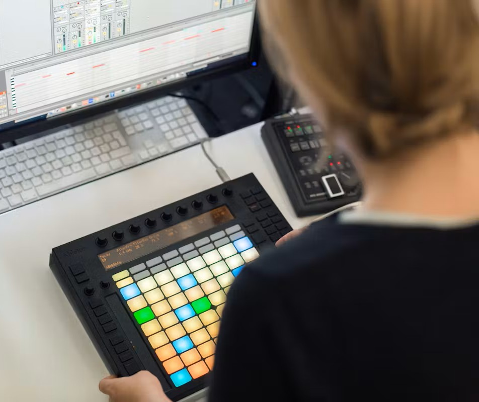
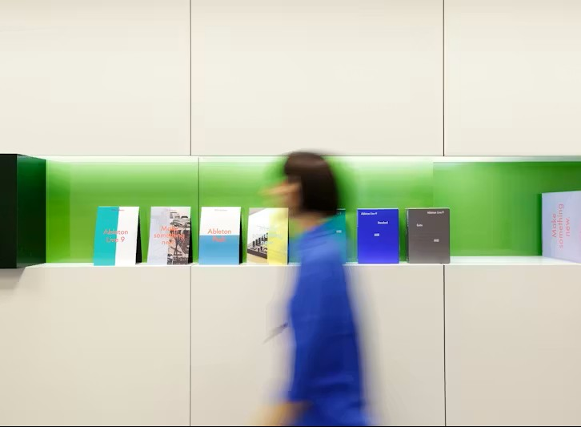

We make Live, Push, Note, Move and Link — unique software and hardware for music creation and performance. With these products, our community of users creates amazing things.
Ableton was founded in 1999 and released the first version of Live in 2001. Our products are used by a community of dedicated musicians, sound designers, and artists across the world.


Making music isn’t easy. It takes time, effort, and learning. But when you’re in the flow, it’s incredibly rewarding.
We feel the same way about making Ableton products. The driving force behind Ableton is our passion for what we make, and the people we make it for.
Why Ableton - Juanpe Bolivar
We are more than 350 people from 30 different countries divided between our headquarters in Berlin and our offices in Los Angeles and Tokyo.
Most of us are active musicians, producers, and DJs, and many of us use Live and Push every day. We come from a wide range of cultural and professional backgrounds. Some of us have PhDs, some are self-taught, and most of us are somewhere in between. What connects us is the shared belief that each of us has the skills and knowledge to contribute to something big: helping to shape the future of music culture.


We believe it takes focus to create truly outstanding instruments. We only work on a few products and we strive to make them great.
Rather than having a one-size-fits-all process, we try to give our people what they need to work their magic and grow. We’ve learned that achieving the best results comes from building teams that are richly diverse, and thus able to explore problems from a wider set of perspectives. We don’t always agree with each other, but opinion and debate are valued and openly encouraged.

We’re passionate about what we do, but we’re equally passionate about improving who we are.
We work hard to foster an environment where people can grow both personally and professionally,
and we strive to create a wealth of opportunities to learn from and with each other.
Alongside an internal training program,
employees are actively supported in acquiring new knowledge and skills, and coached on applying these in
their daily work.
In addition, staff-organized development and music salons are a chance to discuss new technologies,
production techniques and best practices.


We want our employees to love it here. Since we’re looking for exceptional talent from around the world, we will do everything we can to make your transition as easy as possible.
If you're joining us in Berlin, we'll help with relocation and paperwork. We’ll even provide you with free German or English lessons. Plus, working in Germany means you can expect comprehensive health insurance for you and your family, as well as generous maternity and paternity leave. Office hours are flexible, but it’s not all work; we have several company and team outings throughout the year as well as a variety of fun, informal small-group activities.

We’re really proud of the work we’ve done so far. But there’s so much more to come. If you’d like to be a part of it please join us.
See latest jobs >